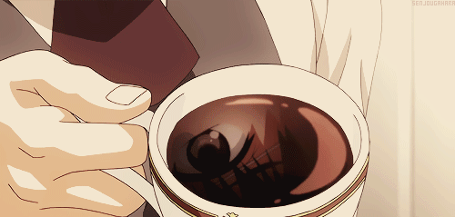

Our Mission
- To craft a serene space blending Japanese calm with Filipino warmth.
- To serve ethically sourced, quality coffee that comforts and energizes.
- To nurture community connections over every cup.

Our Vision
- Becoming the top choice for coffee lovers seeking peace and quality.
- Expanding our reach while maintaining our cozy, heartfelt atmosphere.
- Innovating with sustainable and creative coffee experiences.